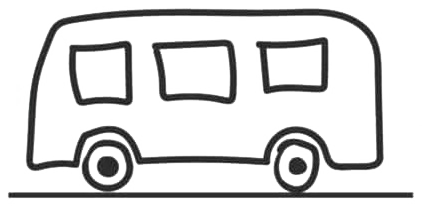

<!DOCTYPE html><html lang="ru"></html><head><title></title><meta charset="UTF-8"><meta name="viewport" content="width=device-width, initial-scale=1.0"><link rel="preconnect" href="https://fonts.googleapis.com">
<link rel="preconnect" href="https://fonts.gstatic.com" crossorigin><link rel="stylesheet" href="css/main.css"></head><body><div class="__container"> <div class="slider"><div class="list__item"> <h1>АНЯ ПРИВЕТ!!!</h1><h3>Я слышал шо у тебя сегодня днюшечка-пердюшечка, мне кажется шо пиздят, но допустим!</h3><button class="next">НАЖМИ НА МЕНЯ</button></div><div class="list__item"> <h3>И как и все пинцессы ты хочешь подарочек, НО! (говно) я его просто так тебе ниадам ниадам </h3><button class="next">АЧЕВСМЫСЛЕ</button></div><div class="list__item"> <h3>А вот в том самом, хы-хы-хы. Для того, чтобы получить подарок, ты должна разгадать 3 загадки! </h3><button class="next">ПУП</button></div><div class="list__item"> <h3>Итак, загадка намба уан! </h3><h4>В какую сторону едет автобус?</h4><span class="btns"><button id="bus1">Влево</button><button id="bus2">Вправо</button></span></div><div class="list__item"> <h3>А вот и вторая загадка подоспела</h3><h4> Беру двумя руками, <br>сую между ногами, <br>
полчаса потею, <br>
а потом балдею</h4><input id="bike-input"><button id="bike-btn">Отравить ответ </button></div><div class="list__item"> <h3>Ты уже у финишной черты черта! И напоследок самая простая загадка. Тебе нужно всего лишь решить это маленькое уравнение: <br>( lim (x→0) ( (sin(x) / x) + (cos(x) / (1 + x^2)) )  *  ( ∫(0 to π/4) (sec^2(t) dt) + e^(sin(0) + ln(1)) ) ) + ( (1 + (1/n))^n  lim (n→∞)  √((n^2 + 1)/(2n^2 + 1)) ) * ( 5!/(3! * 2!) + (arctan(1) * 4) / π - (log₂(4) - log₂(1)) ) = 20
.Конец уравнения</h3><input id="math-input"><button id="math-btn">Отравить ответ </button></div><div class="list__item"> <h3>ПОЗДРАВЛЯЮ!!!!!</h3></div></div></div><script src="js/libs/jquery.min.js"></script><script src="js/libs/babel.min.js" type="text/babel"></script><script src="js/libs/slick.min.js"></script><script src="js/config.min.js"></script><script src="js/script.min.js"></script></body>